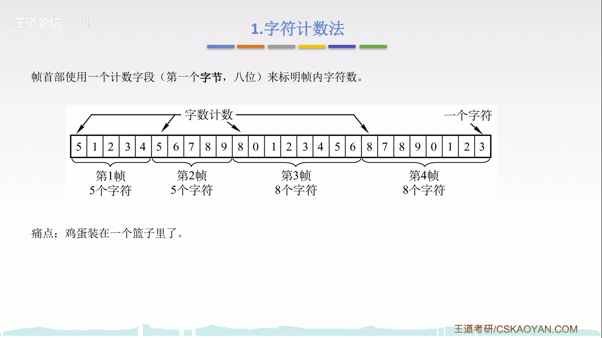
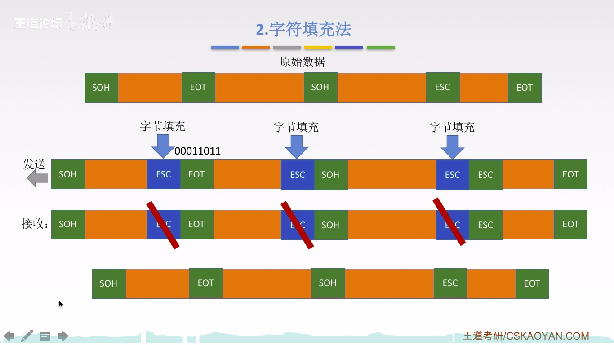

数据链路层基本概念
结点：主机，路由器
链路：网络中两个结点之间的物理通道，链路的传输介质主要有双绞线、光纤和微波。分为有线链路和无线链路
数据链路：网络中两个结点之间的逻辑通道，把实现控制数据传输协议的硬件和软件加到链路上就构成数据链路
帧：链路层的协议数据单元，封装网络层数据报
数据链路层负责通过一条链路从一个加到向另一个物理链路直接相连的相邻结点传送数据报
数据链路层功能概述
数据链路层在物理层提供服务的基础上向网络层提供服务，其最基本的服务是将源自网络层来的数据可靠地传送到相邻结点的目标机网络层。其主要作用是加强物理层传送原始比特流的功能，将物理层提供的可能出错的物理连接改造为逻辑上无差错的数据链路，使之对网络层表现为一条无差错的链路。
功能一：为网络层提供服务。无确认无连接服务，有确认无连接服务，有确认面向连接服务(tip:有链连接一定有确认)
功能二：链路管理，即连接的建立，维持，释放(用于面向连接的服务)
功能三：组帧
功能四：流量控制(限制发送方)
功能五：差错控制（帧错/位错）
封装成帧与透明传输
透明传输是指不管所传数据时什么样的比特组合，都应当能够在链路上传送。因此，链路层就“看不见”有什么妨碍数据传输的东西
当所传数据的比特组合恰巧与某一个控制信息完全一样时，就必须采取适当的措施，使接收方不会将这样的数据误认为是某种控制信息（例如下面的字符填充法中那样），这样才能保证数据链路层的传输是透明的。


总结：由于字节计数法中count字段的脆弱性(其值若有差错将导致灾难性后果)以及字符填充法实现上的复杂性和不兼容性，目前较普遍使用的帧同步法时比特填充和违规编码法